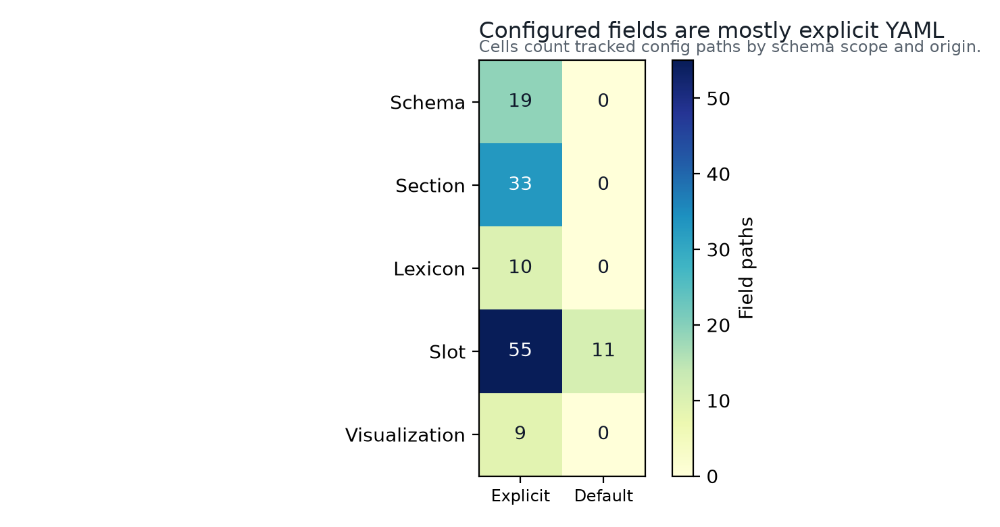
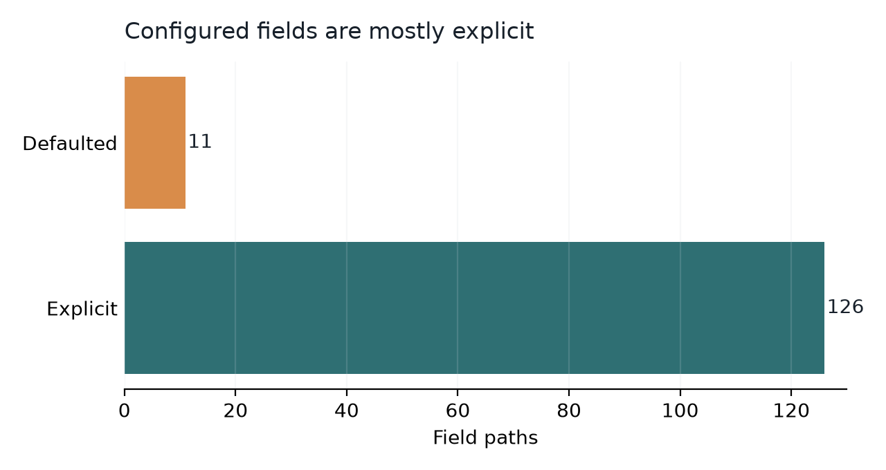

Configuration: Schema-Controlled Lexicon, Slots, and Narrative Moves
The active composition depth is deep. The lexicon
exposes 10 category list(s), and the slot declaration expands to 40
concrete token choice(s). Section switches are evaluated before
composition so disabled sections cannot silently borrow enabled-section
claims.
Configuration owns more than vocabulary. It also owns section titles, narrative moves, method protocol rows, contribution claims, and audit rules. That makes the manuscript shape visible in one YAML file while preserving the rule that source code, not hand-edited output, performs the composition.
The tables in this section expose the declared surface that controls rendering. They are useful during review because a title change, slot expansion, or disabled section appears as a small config diff and a regenerated artifact diff rather than as scattered prose edits.
The configured-field inventory separates 126 explicit YAML path(s)
from 11 loader-defaulted path(s). That distinction matters for forks: a
field that appears in the rendered manuscript may be intentionally
authored in config.yaml, or it may be a documented default
inherited from the template.

![11-row heatmap with columns for section switch, title, narrative moves, and slot count: abstract: switch explicit, title explicit, moves explicit, 3 slots; introduction: switch explicit, title explicit, moves explicit, 8 slots; methods: switch explicit, title explicit, moves explicit, 6 slots; results: switch explicit, title explicit, moves explicit, 5 slots; discussion: switch explicit, title explicit, moves explicit, 3 slots; configuration: switch explicit, title explicit, moves explicit, 1 slots; evaluation: switch explicit, title explicit, moves explicit, 5 slots; reproducibility: switch explicit, title explicit, moves explicit, 2 slots; limitations: switch explicit, title explicit, moves explicit, 3 slots; scope: switch explicit, title explicit, moves explicit, 2 slots; authoring_contract: switch explicit, title explicit, moves explicit, 2 slots. The matrix records configuration coverage, not manuscript quality.](../figures/section_configuration_heatmap.png)

Declared Section Titles
| Section key | Rendered title | Enabled |
|---|---|---|
abstract |
Abstract | True |
introduction |
Introduction: Lexicon as Data and Manuscript as Build Artifact | True |
methods |
Methods: Source-Owned Token Injection and Conditional IMRAD Assembly | True |
results |
Results: Provenance, Density, and Resolved Manuscript Surface | True |
discussion |
Discussion: Accountability Boundaries for Generated Prose | True |
configuration |
Configuration: Schema-Controlled Lexicon, Slots, and Narrative Moves | True |
evaluation |
Evaluation: Gate Criteria, QA Probes, and Failure Discovery | True |
reproducibility |
Reproducibility: Seeded Regeneration and Artifact Trace | True |
limitations |
Limitations: Non-Claims, Misuse Modes, and Human Review | True |
scope |
Scope: Related Generators and Responsible Forking | True |
authoring_contract |
Authoring Contract: Human Review and Forking Obligations | True |
Configuration Counts
- Seed:
431 - Composition depth:
deep - Lexicon categories:
10 - Slot rules:
22 - Token choices:
40 - Enabled sections:
11 - Method steps:
18 - Design principles:
13 - Pipeline phases:
17 - Quality probes:
14 - Authoring obligations:
8 - Explicit configured paths:
126 - Defaulted configured paths:
11 - Enabled visualization flags:
7 - Section-level configured paths:
33 - Lexicon-level configured paths:
10 - Slot-level configured paths:
66 - Narrative moves:
52 - Audit rules:
12 - Contribution claims:
9
Configured Field Summary
| Measure | Count |
|---|---|
| Total tracked field paths | 137 |
| Explicit YAML paths | 126 |
| Loader-defaulted paths | 11 |
| Enabled visualization flags | 7 |
| Section-level paths | 33 |
| Lexicon-level paths | 10 |
| Slot-level paths | 66 |
| Visualization-control paths | 9 |
| Top-level schema paths | 19 |
Configured Field Inventory
| Path | Origin | Scope | Summary |
|---|---|---|---|
madlib |
explicit | schema | configured field |
madlib.audit_rules |
explicit | schema | 12 entries |
madlib.authoring_obligations |
explicit | schema | 8 entries |
madlib.composition_depth |
explicit | schema | deep |
madlib.contribution_claims |
explicit | schema | 9 entries |
madlib.design_principles |
explicit | schema | 13 entries |
madlib.evaluation_criteria |
explicit | schema | 7 entries |
madlib.failure_modes |
explicit | schema | 13 entries |
madlib.hypothesis |
explicit | schema | Deterministic lexical injection can generate a complete conditional IMRAD manuscript while preserving token provenance, section intent, and audit-ready method evidence. |
madlib.lexicon |
explicit | schema | 10 categories |
madlib.lexicon.adjectives |
explicit | lexicon | 7 tokens |
madlib.lexicon.artifacts |
explicit | lexicon | 12 tokens |
madlib.lexicon.audiences |
explicit | lexicon | 4 tokens |
madlib.lexicon.constraints |
explicit | lexicon | 5 tokens |
madlib.lexicon.failures |
explicit | lexicon | 5 tokens |
madlib.lexicon.measures |
explicit | lexicon | 8 tokens |
madlib.lexicon.methods |
explicit | lexicon | 5 tokens |
madlib.lexicon.nouns |
explicit | lexicon | 7 tokens |
madlib.lexicon.qualities |
explicit | lexicon | 5 tokens |
madlib.lexicon.verbs |
explicit | lexicon | 7 tokens |
madlib.method_protocol |
explicit | schema | 18 entries |
madlib.narrative_moves |
explicit | schema | configured field |
madlib.narrative_moves.abstract |
explicit | section | 3 moves |
madlib.narrative_moves.authoring_contract |
explicit | section | 5 moves |
madlib.narrative_moves.configuration |
explicit | section | 3 moves |
madlib.narrative_moves.discussion |
explicit | section | 4 moves |
madlib.narrative_moves.evaluation |
explicit | section | 4 moves |
madlib.narrative_moves.introduction |
explicit | section | 4 moves |
madlib.narrative_moves.limitations |
explicit | section | 4 moves |
madlib.narrative_moves.methods |
explicit | section | 13 moves |
madlib.narrative_moves.reproducibility |
explicit | section | 4 moves |
madlib.narrative_moves.results |
explicit | section | 4 moves |
madlib.narrative_moves.scope |
explicit | section | 4 moves |
madlib.pipeline_phases |
explicit | schema | 17 entries |
madlib.quality_probes |
explicit | schema | 14 entries |
madlib.schema_version |
explicit | schema | configured field |
madlib.section_conditions |
explicit | schema | configured field |
madlib.section_conditions.abstract |
explicit | section | enabled |
madlib.section_conditions.authoring_contract |
explicit | section | enabled |
madlib.section_conditions.configuration |
explicit | section | enabled |
madlib.section_conditions.discussion |
explicit | section | enabled |
madlib.section_conditions.evaluation |
explicit | section | enabled |
madlib.section_conditions.introduction |
explicit | section | enabled |
madlib.section_conditions.limitations |
explicit | section | enabled |
madlib.section_conditions.methods |
explicit | section | enabled |
madlib.section_conditions.reproducibility |
explicit | section | enabled |
madlib.section_conditions.results |
explicit | section | enabled |
madlib.section_conditions.scope |
explicit | section | enabled |
madlib.section_titles |
explicit | schema | configured field |
madlib.section_titles.abstract |
explicit | section | Abstract |
madlib.section_titles.authoring_contract |
explicit | section | Authoring Contract: Human Review and Forking Obligations |
madlib.section_titles.configuration |
explicit | section | Configuration: Schema-Controlled Lexicon, Slots, and Narrative Moves |
madlib.section_titles.discussion |
explicit | section | Discussion: Accountability Boundaries for Generated Prose |
madlib.section_titles.evaluation |
explicit | section | Evaluation: Gate Criteria, QA Probes, and Failure Discovery |
madlib.section_titles.introduction |
explicit | section | Introduction: Lexicon as Data and Manuscript as Build Artifact |
madlib.section_titles.limitations |
explicit | section | Limitations: Non-Claims, Misuse Modes, and Human Review |
madlib.section_titles.methods |
explicit | section | Methods: Source-Owned Token Injection and Conditional IMRAD Assembly |
madlib.section_titles.reproducibility |
explicit | section | Reproducibility: Seeded Regeneration and Artifact Trace |
madlib.section_titles.results |
explicit | section | Results: Provenance, Density, and Resolved Manuscript Surface |
madlib.section_titles.scope |
explicit | section | Scope: Related Generators and Responsible Forking |
madlib.seed |
explicit | schema | 431 |
madlib.slots |
explicit | schema | 22 slot rules, 40 token choices |
madlib.slots.authoring_audience |
explicit | slot | audiences -> authoring_contract (1) |
madlib.slots.authoring_audience.count |
defaulted | slot | 1 |
madlib.slots.authoring_audience.section |
explicit | slot | authoring_contract |
madlib.slots.authoring_quality |
explicit | slot | qualities -> authoring_contract (1) |
madlib.slots.authoring_quality.count |
defaulted | slot | 1 |
madlib.slots.authoring_quality.section |
explicit | slot | authoring_contract |
madlib.slots.config_constraint |
explicit | slot | constraints -> configuration (1) |
madlib.slots.config_constraint.count |
defaulted | slot | 1 |
madlib.slots.config_constraint.section |
explicit | slot | configuration |
madlib.slots.discussion_adjective |
explicit | slot | adjectives -> discussion (1) |
madlib.slots.discussion_adjective.count |
defaulted | slot | 1 |
madlib.slots.discussion_adjective.section |
explicit | slot | discussion |
madlib.slots.discussion_audience |
explicit | slot | audiences -> discussion (2) |
madlib.slots.discussion_audience.count |
explicit | slot | 2 |
madlib.slots.discussion_audience.section |
explicit | slot | discussion |
madlib.slots.evaluation_artifact |
explicit | slot | artifacts -> evaluation (2) |
madlib.slots.evaluation_artifact.count |
explicit | slot | 2 |
madlib.slots.evaluation_artifact.section |
explicit | slot | evaluation |
madlib.slots.evaluation_measure |
explicit | slot | measures -> evaluation (3) |
madlib.slots.evaluation_measure.count |
explicit | slot | 3 |
madlib.slots.evaluation_measure.section |
explicit | slot | evaluation |
madlib.slots.intro_nouns |
explicit | slot | nouns -> introduction (4) |
madlib.slots.intro_nouns.count |
explicit | slot | 4 |
madlib.slots.intro_nouns.section |
explicit | slot | introduction |
madlib.slots.intro_verbs |
explicit | slot | verbs -> introduction (4) |
madlib.slots.intro_verbs.count |
explicit | slot | 4 |
madlib.slots.intro_verbs.section |
explicit | slot | introduction |
madlib.slots.limitation_failure |
explicit | slot | failures -> limitations (3) |
madlib.slots.limitation_failure.count |
explicit | slot | 3 |
madlib.slots.limitation_failure.section |
explicit | slot | limitations |
madlib.slots.method_artifact |
explicit | slot | artifacts -> methods (2) |
madlib.slots.method_artifact.count |
explicit | slot | 2 |
madlib.slots.method_artifact.section |
explicit | slot | methods |
madlib.slots.method_constraint |
explicit | slot | constraints -> methods (1) |
madlib.slots.method_constraint.count |
defaulted | slot | 1 |
madlib.slots.method_constraint.section |
explicit | slot | methods |
madlib.slots.method_name |
explicit | slot | methods -> methods (1) |
madlib.slots.method_name.count |
defaulted | slot | 1 |
madlib.slots.method_name.section |
explicit | slot | methods |
madlib.slots.method_quality |
explicit | slot | qualities -> methods (2) |
madlib.slots.method_quality.count |
explicit | slot | 2 |
madlib.slots.method_quality.section |
explicit | slot | methods |
madlib.slots.reproducibility_artifact |
explicit | slot | artifacts -> reproducibility (2) |
madlib.slots.reproducibility_artifact.count |
explicit | slot | 2 |
madlib.slots.reproducibility_artifact.section |
explicit | slot | reproducibility |
madlib.slots.result_artifact |
explicit | slot | artifacts -> results (2) |
madlib.slots.result_artifact.count |
explicit | slot | 2 |
madlib.slots.result_artifact.section |
explicit | slot | results |
madlib.slots.result_measure |
explicit | slot | measures -> results (3) |
madlib.slots.result_measure.count |
explicit | slot | 3 |
madlib.slots.result_measure.section |
explicit | slot | results |
madlib.slots.scope_audience |
explicit | slot | audiences -> scope (1) |
madlib.slots.scope_audience.count |
defaulted | slot | 1 |
madlib.slots.scope_audience.section |
explicit | slot | scope |
madlib.slots.scope_constraint |
explicit | slot | constraints -> scope (1) |
madlib.slots.scope_constraint.count |
defaulted | slot | 1 |
madlib.slots.scope_constraint.section |
explicit | slot | scope |
madlib.slots.study_adjective |
explicit | slot | adjectives -> abstract (1) |
madlib.slots.study_adjective.count |
defaulted | slot | 1 |
madlib.slots.study_adjective.section |
explicit | slot | abstract |
madlib.slots.study_noun |
explicit | slot | nouns -> abstract (1) |
madlib.slots.study_noun.count |
defaulted | slot | 1 |
madlib.slots.study_noun.section |
explicit | slot | abstract |
madlib.slots.study_verb |
explicit | slot | verbs -> abstract (1) |
madlib.slots.study_verb.count |
defaulted | slot | 1 |
madlib.slots.study_verb.section |
explicit | slot | abstract |
madlib.visualizations |
explicit | visualization | enabled |
madlib.visualizations.configured_field_matrix |
explicit | visualization | true |
madlib.visualizations.enabled |
explicit | visualization | true |
madlib.visualizations.field_origin_summary |
explicit | visualization | true |
madlib.visualizations.provenance_trace_map |
explicit | visualization | true |
madlib.visualizations.quality_gate_matrix |
explicit | visualization | true |
madlib.visualizations.section_configuration_heatmap |
explicit | visualization | true |
madlib.visualizations.section_token_allocation |
explicit | visualization | true |
madlib.visualizations.token_injection_flow |
explicit | visualization | true |